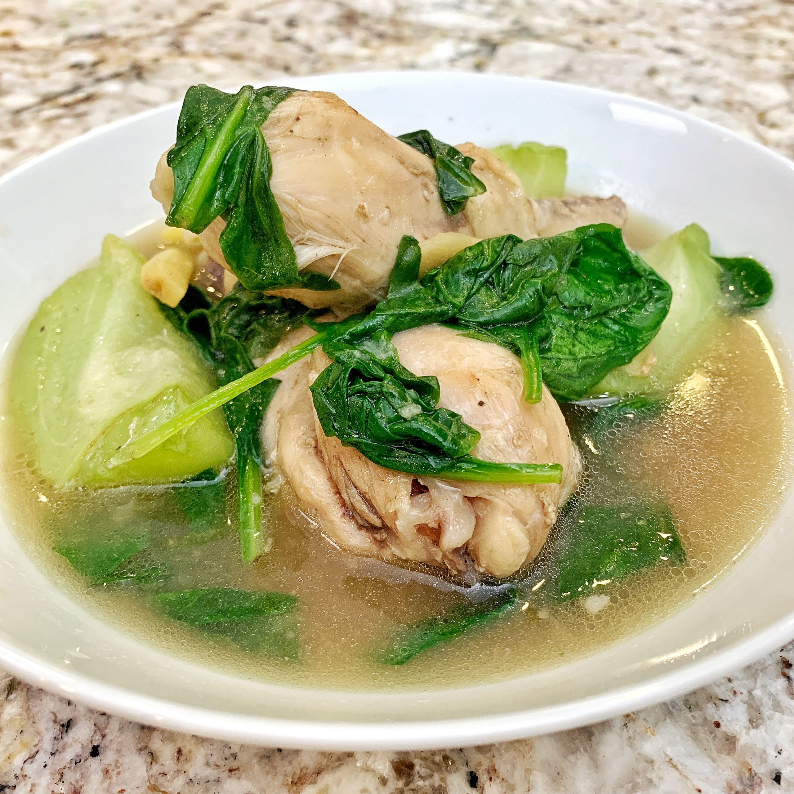

Tinola recipe
Back to Homepage

Tinola is also a famous soup dish in the Philippines
It involves cooking chicken with ginger broth.
This is best enjoyed with rice and partner with fish sauce as a dip. Let me show you how to make Tinola!
Ingredients:
- Chicken - cut into serving pieces
- Green Papaya - wedged
- Malunggay leaves
- Hot pepper leaves
- Onion
- Ginger
- Fish Sauce
- Garlic
- Cooking oil
- Maggi Magic Chicken cubes
How to make it?
Steps in how to make Tinola:
- Heat cooking oil in a cooking pot. Saute garlic, onion and ginger until the onion softens.
- Add the chicken. Continue sauteing for 2 mins. or until it turns light brown.
- Pour 2 tbsp. of fish sauce. Stir.
- Add the water as needed. Let it boil.
- Put the green papaya wedges into the pot. Continue to simmer for 15 - 20 mins.
- Add Maggi Magic Chicken cubes. Stir.
- Turn off the heat and then add the hot pepper leaves and malunggay leaves into the cooking pot. Cover for 2 mins to let the residual heat cook the green veggies.
- Serve hot. Share and enjoy! Don't forget the rice!